Ashtray: Magazine Layout
2025
University Project
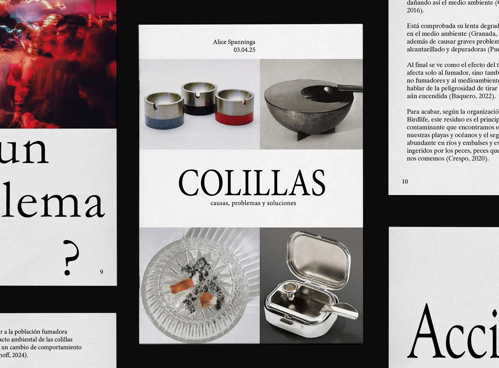
In this project, we explored a social issue through research and interviews. I chose to investigate the problem of cigarette butt pollution in public spaces.
Based on my findings, I designed a magazine presenting the information clearly and attractively. By using experimental layouts and striking imagery, I aimed to engage the reader while maintaining typographic consistency and visual coherence throughout the publication.
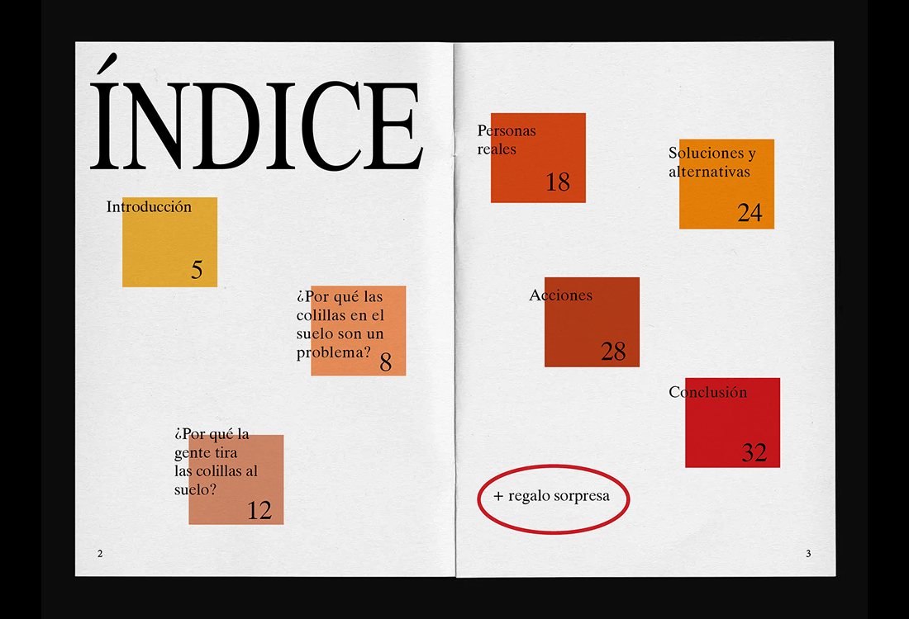
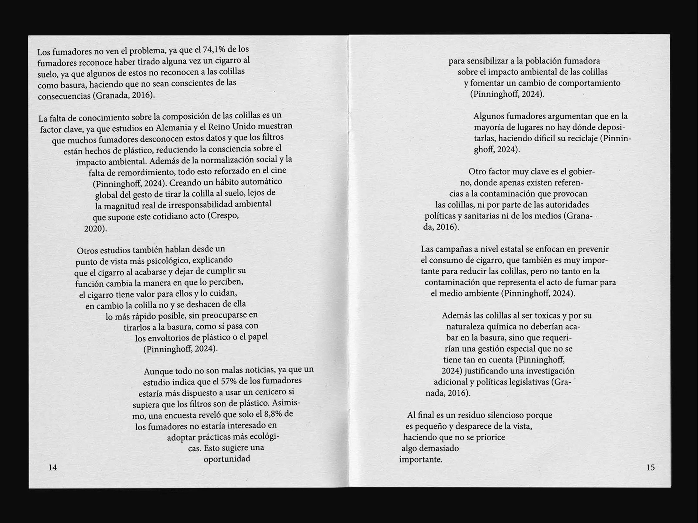
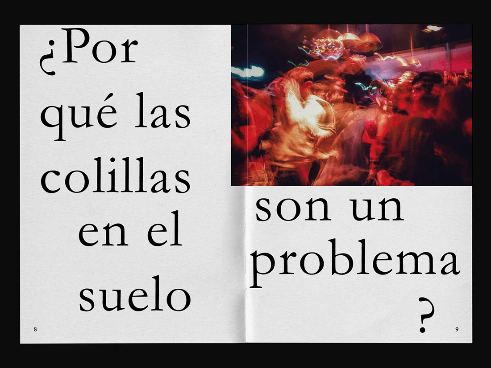
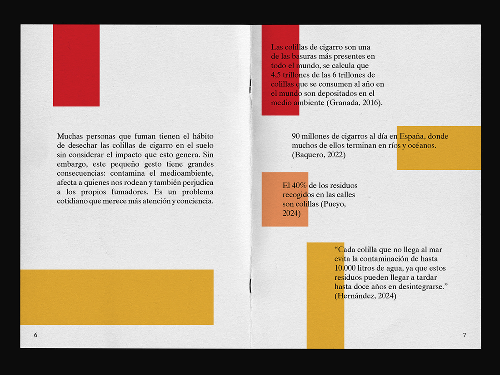
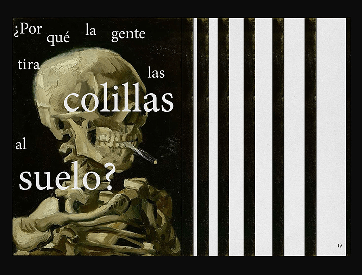
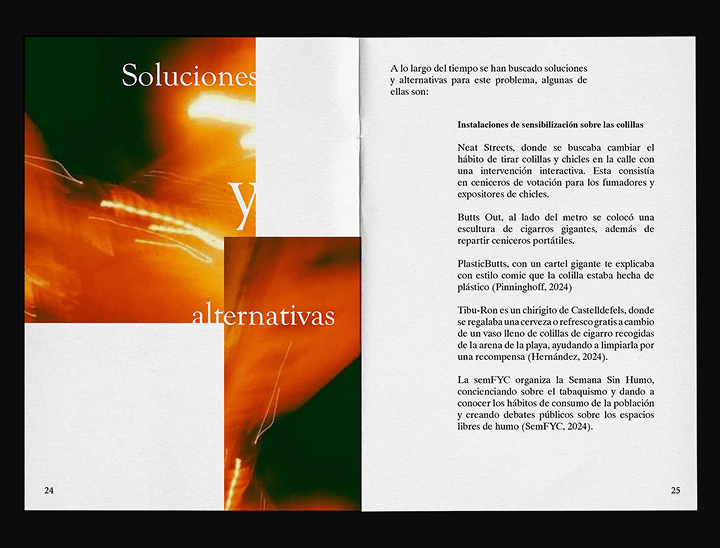
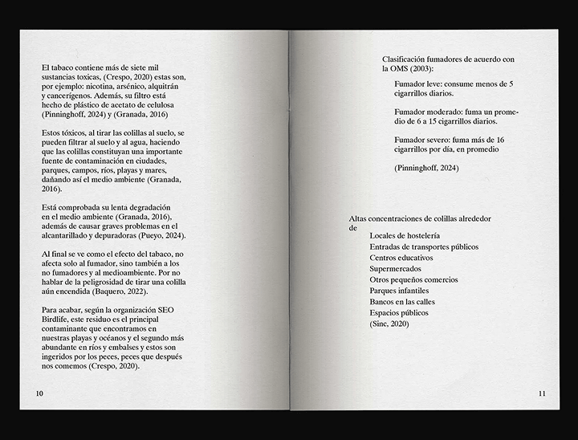
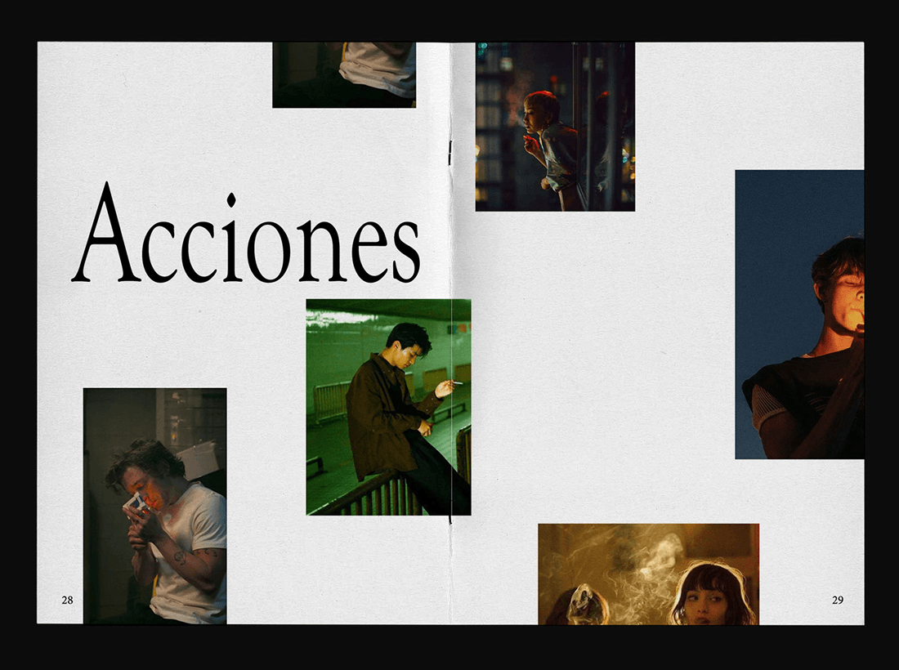
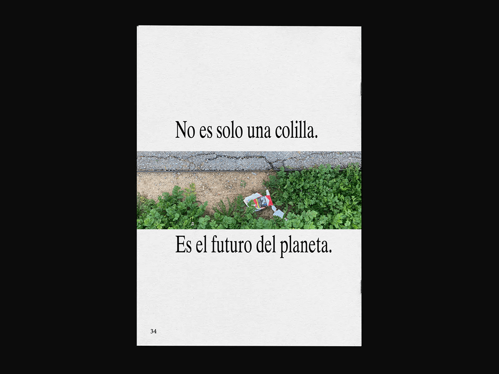
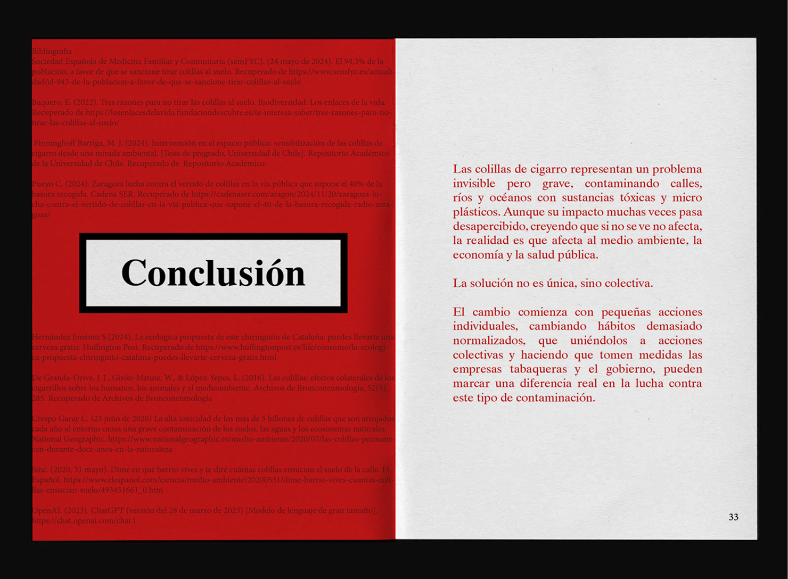
What I enjoyed most about this project was experimenting with information design. It was a fascinating challenge to analyze the issue from multiple perspectives and play with visual associations. My goal was to translate this data into a visual language that felt deeply connected to the cigarette world—using its textures and aesthetics—balancing a raw subject matter with playful editorial design.